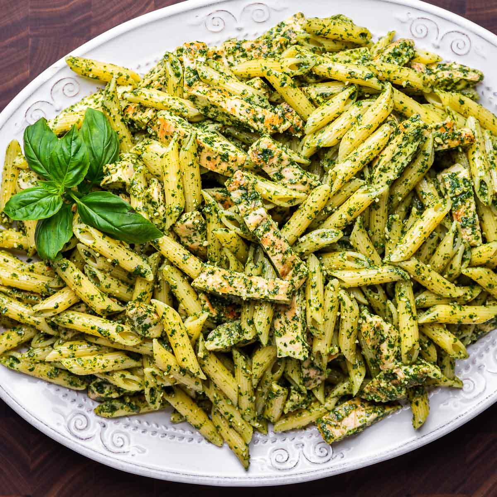

Chicken Pesto Pasta

Recipe Description
This One Pot Creamy Pesto Chicken Pasta was inspired by those little packets of powdered pasta sauce mix I always see in the grocery store. While those little packets are probably great for camping, stocking a bomb shelter, or keeping in your emergency hurricane supplies, I think regular weeknights call for something better. Better but not harder. This Creamy Pesto Chicken Pasta comes together in about 25 minutes, is super luscious and creamy, and uses just a few simple ingredients.
Ingredients
- 1 lb. boneless, skinless chicken breast
- 2 Tbsp butter
- 2 cloves garlic
- 1 cup milk
Steps
- Cut the chicken breast into 1-inch pieces. Add the butter to a deep skillet and melt over medium heat. Add the chicken to the skillet and cook over medium heat until the chicken is slightly browned on the outside.
- While the chicken is cooking, mince the garlic. Add the garlic to the skillet with the chicken and continue to sauté for one minute more.
- Add the uncooked pasta and chicken broth to the skillet with the chicken and garlic. Stir to dissolve any browned bits from the bottom of the skillet. Place a lid on the skillet, turn the heat up to medium-high, and bring the broth up to a boil.
- Once the broth comes to a full boil, give the pasta a quick stir, replace the lid, and turn the heat down to medium-low.
- Let the pasta simmer over medium-low heat for about 8 minutes, or until the pasta is tender and most of the broth has been absorbed.
Return to main page